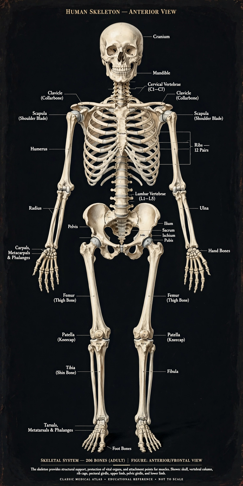

Skeletal system

[Image: front view of the human skeleton]The human skeleton is the internal framework of the body, composed of bones and cartilages. An adult has 206 bones (babies are born with roughly 270–300, many of which fuse). The skeleton supports the body, protects organs (the skull around the brain, the ribs around the heart and lungs), enables movement as levers for muscles, stores minerals (calcium and phosphate), and produces blood cells in its red bone marrow.
Bones are living tissue — a composite of collagen and hydroxyapatite mineral — constantly remodelled by osteoblasts and osteoclasts. The skeleton divides into the axial skeleton (skull, spine, ribs, sternum) and the appendicular skeleton (limbs and their girdles).
Joints and connective tissue
Joints range from immovable sutures in the skull to ball-and-socket joints at shoulder and hip. Ligaments join bone to bone; tendons join muscle to bone; cartilage cushions joint surfaces. Arthritis and osteoporosis — loss of bone density, common in ageing — are major sources of disability.
In animals
Exoskeletons (insects, crustaceans) and hydrostatic skeletons (worms) solve the same problems externally or hydraulically. Bone itself is a vertebrate innovation whose fossil record reaches back over 500 million years.